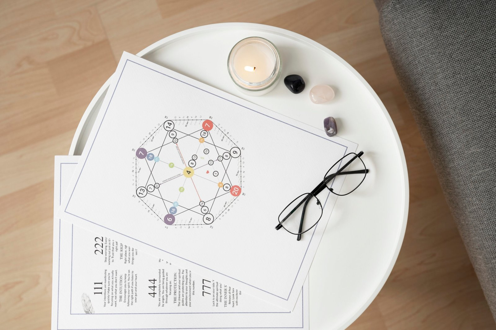
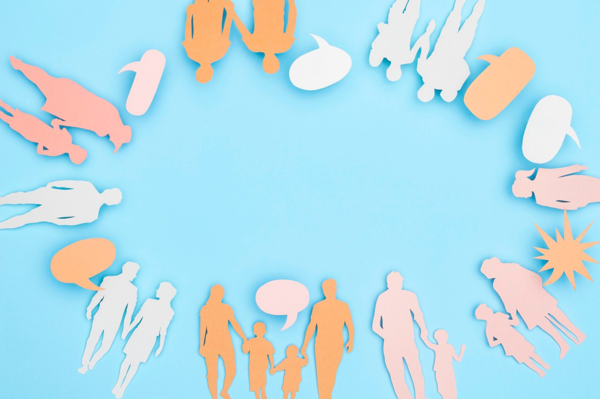
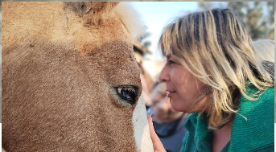

Destacado
Formación · 12 semanas · Online
Decodificación Biológica
Aprendé a leer el cuerpo: cada síntoma es información del inconsciente biológico.
GratisInscribirme →
Programas pensados para acompañarte en tu proceso personal y, si querés, profesionalizar tu camino como terapeuta holística.
Una formación de 12 semanas para entender el síntoma como información y aprender a decodificar conflictos biológicos en tu vida y la de tus consultantes.
Aprendé a leer el cuerpo: cada síntoma es información del inconsciente biológico.

DestacadoUna herramienta visual para mapear vínculos, sistemas y memorias familiares.

"Quien no conoce su historia, tiende a repetirla". Honrá, liberá y trascendé tu árbol genealógico.
Iniciación práctica para abrir tu propio registro y leer con respeto y discernimiento.
Una jornada para reconciliarte con la línea materna y sus historias no contadas.

PresencialUn encuentro al aire libre para comprender, soltar y dar el próximo paso.
Origen de la decodificación, los tres cerebros, las leyes biológicas. Vocabulario común para empezar.
Recorrido por sistemas y aparatos. Cómo escuchar lo que cada órgano expresa cuando aparece un síntoma.
Cómo entra el árbol genealógico en escena: lealtades, programas heredados y memorias del clan.
Casos en vivo, supervisión grupal y entrega de un trabajo final acompañada paso a paso.
"La formación me ordenó internamente todo lo que venía intuyendo. Karina sostiene con presencia y técnica al mismo tiempo, no es algo común."
"Era la tercera formación que probaba en transgeneracional y la primera donde sentí que de verdad podía aplicarlo después en consulta."
"Llegué buscando una herramienta más y me fui con un cambio personal. Eso, para mí, es lo que distingue a esta escuela."
Escribinos y te enviamos el plan completo de la formación que te interese.
Pedir información →